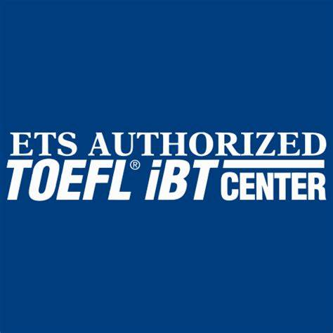
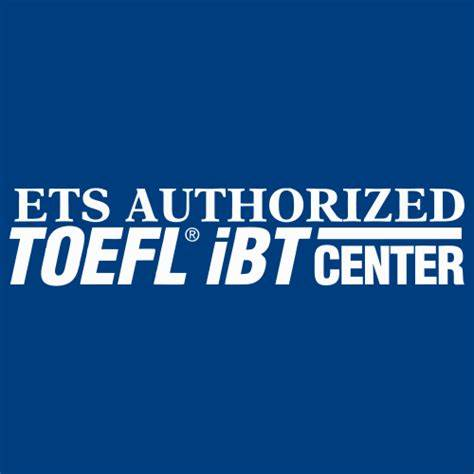

Kinal es un Centro Educativo privado, no lucrativo, dirigido a la formación técnica profesional de jóvenes y adultos, de beneficio colectivo y asistencia social en favor de los sectores más necesitados de la comunidad. Nuestro valor fundamental es enseñar a realizar el trabajo bien hecho, que sea la base de la superación de alumnos y el medio para servir a los demás.
Durante 2023 recibimos más de 600 solicitudes de trabajo para nuestros antiguos alumnos.
Para mi rediseño de la página de Kinal fue que fuera más dinamico con el usuario ya que siento que la página de Kinal esta bien talvez solo le falte algo que te mantenga la retencion del público y siento que dandole un poco más de dinamica al página puede atraer la atención del público. Tambien siento que muchas personas entran a la página de Kinal por los examenés de admision y siento que en lugar que se ubican esta es muy dificil de encontrar, es mejor que un atajo los dirija al rapido, para comunicarse por los examenes de admision.


 
